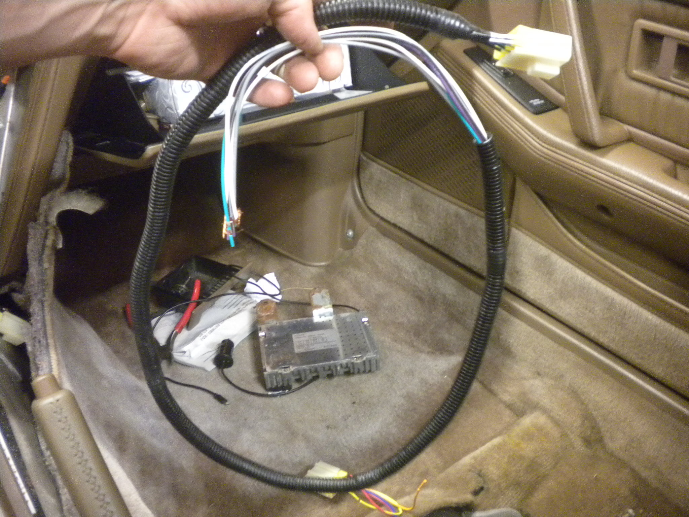
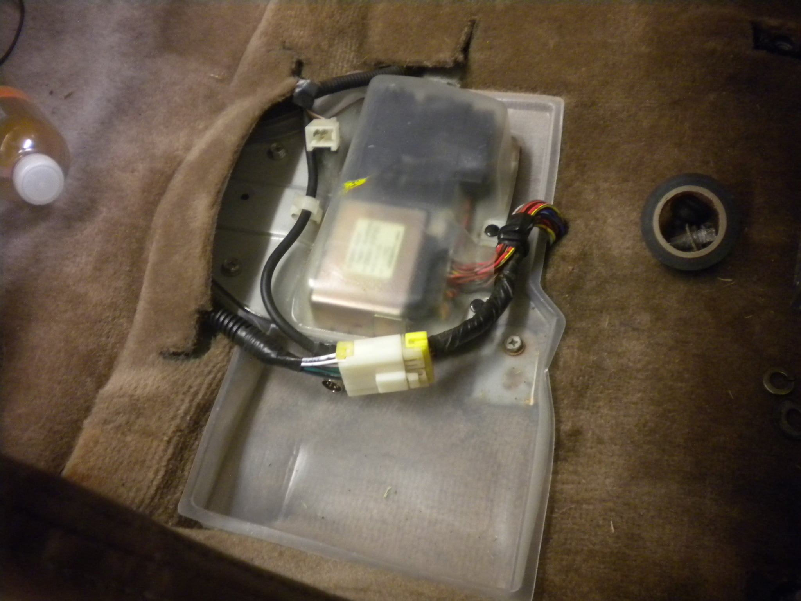
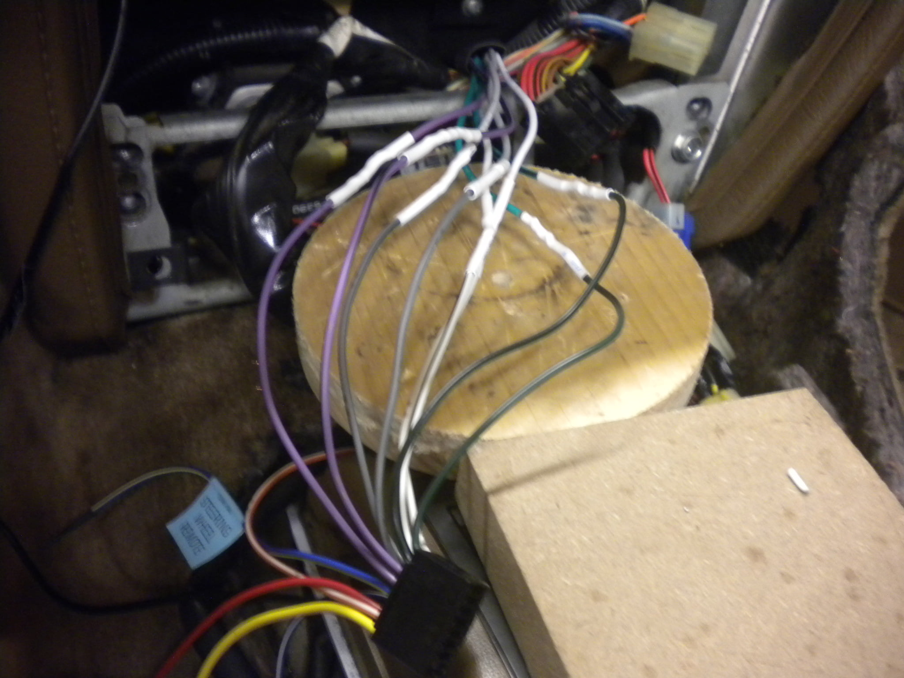

-
So… I have an '85 2+2 GLL, and from what I've read, I should have a factory amp underneath the passenger seat that can be "bypassed" to run an aftermarket stereo. I've recently removed my passenger seat to replace it, as well as repair some rust damage, and all I found underneath it was two components, one of which is clearly anti-theft. So, where exactly is this "amp"?
WP_20170910_16_11_20_Pro.jpg
What was under my seat…1985 300ZX Z31 2+2 VG33ET (running!) -
Someone already removed it. It plugs into that connector with the yellow on the back.
The factory radio has a round plugged cable that runs down to the amp, the amp amplifies that and sends it to your speakers via the plug with the yellow on it. So you need to run your speaker outputs from your new radio under the carpet to that plug.
You can either splice / hack into it or you can get a cable from Crutchfield.com so you don't have to.
Here's the harness I got from Crutchfield.com. I added the wire covering to make it look stock. The factory amp is laying on the floor in the background:

You plug that in under the seat and run it under the carpet up to the back of the radio:

And out the opening:
Then solder that to your new radio speaker outs:

Doing this saves you from having to run new speaker wires throughout the car. You can also get the plastic single din faceplate from Crutchfield or Amazon to install the radio.
-
Oh, okay. Thanks!1985 300ZX Z31 2+2 VG33ET (running!) -
You wouldn't happen to have a part number for that Crutchfield harness, would you? I'm on their website and can't find anything like that…1985 300ZX Z31 2+2 VG33ET (running!) -
Metra 70-1741 Receiver Wiring Harness
after you punch your vehicle in, go down to "Parts & Accessories".
then click on "Wiring Harenesses"
comes with the power hareness too.
They also have the stuff to make steering wheel controls work and the infamous Metra 99-7411 Dash kit to install single DIN radios, but sometimes it's cheaper on Amazon.
https://www.crutchfield.com/p_120701…s.html?tp=2977Last edited by Dunkine; 09-12-2017, 08:18 PM.

Copyright © 2006–. All rights reserved. Privacy Policy